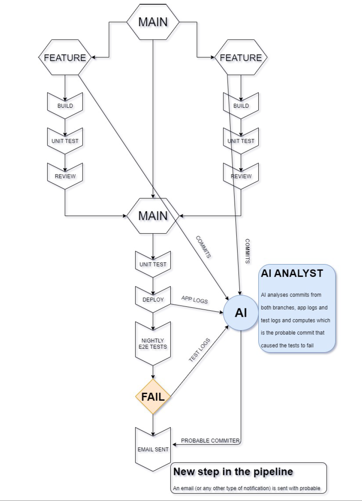

- Michal Kovacik - PL in Software engineering michal.kovacik@t-systems.com
- Cyril Sadovsky - Senior Software engineer c.sadovsky@telekom.com
- We are not ML experts, but we are curious about GPT models and their potential. We are also interested in AI tools and usage in Enterprise.
-
The transformer architecture is a type of neural network architecture that was introduced in 2017 by Google. for natural language processing tasks such as machine translation. It is based on the self-attention mechanism, which allows the model to weigh the importance of different parts of the input sequence when computing the representation of each element in the sequence.
- 2017 - Google described the concept of transformers - 65 million parameters
- 2018 - GPT-1 - 110 million parameters
- 2019 - GPT-2 - 1.5B parameters
- 2020 - GPT-3 - 175B parameters
- 2023 - GPT-4 - 1T parameters ??? - not confirmed information
- Successfully transitioning to a world with superintelligence is perhaps the most important—and hopeful, and scary—project in human history. Success is far from guaranteed, and the stakes (boundless downside and boundless upside) will hopefully unite all of us. Sam Altman - OpenAI CEO
- Artificial intelligence (AI) is becoming increasingly important, but scepticism is also spreading: People are not sure whether they should trust companies and their AI products or not. Deutsche Telekom has a responsibility to promote the development of an ethical framework for intelligent technologies. These must follow predefined ethical rules. Deutsche Telekom
- GPT standerdized test results
-
Where we see potential?
- Enable developers to focus on more complex tasks and improve their productivity by offering quick solutions and reducing time spent on research
- Code review, Marge request
- Scripting and automation of repetitive tasks
- Documentation, comments
- Brainstorming - Board of Timotheus Höttges
- Boosting of creativity YAM Hack Kosice post
- Business analysis

-
Learn basics
How to use ChatGPT?
Lesson learned: We need to learn the AI language, exactly the same as we learned the programming language. -
Code Review Story
....
Lesson learned: Increase quality by third pair of eyes - Copilot examples Analog wathch under 30 secons - HTML,CSS and JavaScript Get all projects from GitLab - Python Display data from json on HTML page with Python and Flask Lesson Learned: Efficiency in writing a code
- Turn me into console Story of a rainy Sunday, where the lines between human and AI blurred. Lesson learned: Stronger set of code review process and testing phase (unit test, integration test, e2e test)
- Break - something funny.
| Benefits | Threats |
|---|---|
|
|
|
|
|
|
|
|
-
Why?
We do not have one view. But we know that we want to be a part of the future.
That includs increasing our productivity, quality and creativity therefore we bring bigger value to our customers.
OK, OK, it seems like really good corparate bullshit bingo, but we (Cyril and Michal) are doing it for be actual and relevat and stay competent for next years. -
How?
We as an Deutsche Telekom are in cooperation with Microsoft.- Speed Max: Copilot for Developers
- Speed High: Playground for AI (with GPT models - GDPR complient)
- Speed Normal: GPT model for products
-
What?
-
AI reviewer for Developers

-
AI assitent for Developers
 - Pilot for Playgroung and Copilot - Control group vs Others
- We are also looking for new ideas for increasing development process efficiency or product improvement (or new products). Utilizing Vector Databases (like Pinecone) for protecting data privacy - Link.
-
AI reviewer for Developers
Stay curious and ask questions.